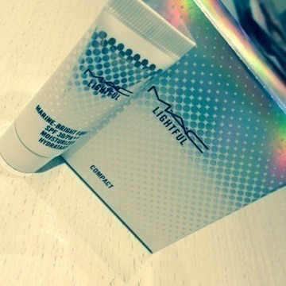

2014/0905Fri（´-`）.｡oO(かずみ ん×303
みなさん、
やっぽー(∩*´ω` *∩)
いつも応援ありがとうぎ♡
うぎうぎうぎ(σ・з・)σ
ジャケ写、公開されたね！
私もさっき見たよ！
私みんなと見てる先違う！！
足も私と若月だけ開いてる！
あれ？みんな開いてると
ばかり思ってた(*ﾟﾛﾟ)!!笑
この制服大好き！

いくしゃんいくしゃん♪
-------
2日間お休みがあったので
おばあちゃんの家に行ってきました！
チョコは相変わらず長くてうるさい！
↑犬に見えない。
顔はこんな感じ...(￣▽￣)
すき焼き食べた〜♡
美味しかった〜(*´ω`*)
今日は大好きなシュープリームララで
お買い物したよ〜♡
衝動買いっ！


ワンピースとブラウス
めっちゃ可愛いんだよ(*´ｰ`*人)
早く着たーい♡
店員さん、
乃木どこ見てくれてるらしい！
ありがとうございます(*ﾟﾛﾟ)pq

M・A・Cでファンデも
買っちゃいました( ∩ˇωˇ∩)
使うの楽しみわくわく♡
今あごにきびと左頬にきびが
痛いので早く治れー>_<
------------
そしてそして
季刊乃木坂"涼秋"発売になりました♡
載ってます！
コメント等で感想ありがとう(*´ω`*)
まだの人はぜひぜひチェックしてみて下さい♡

＊質問たいむ＊
ブログの文章にはどれくらい時間をかけてますか？
・・・→1時間〜2日くらいかけてます！最低でも1時間はかかるし、ちょっとずつ書いたら2日かかる！！笑
握手会で呼ばれたい名前は何？
・・・→かずみんかかずみちゃん！
ゆで玉子は半熟とろとろ、半熟硬め、ハードボイルドのどれが好みですか？
・・・→半熟かためが好きです！！
かずみんは元気がない時、どうやってテンション上げますか??
・・・→仕事の休みに女子会開く＼(^o^)／
共演した芸能人の中で一番オーラがあった人(ザ芸能人みたいな人)って誰ですか？
・・・→テレビ局ですれ違った上戸彩さんが可愛過ぎて仰天しました∩(´;ヮ;｀)
かずみんの地元は海も山もあるけど、海派？山派？
・・・→海派です！小さい頃から海大好き！大きくなってからは一人で海に行って波を眺めてました。笑
・・・→海派です！小さい頃から海大好き！大きくなってからは一人で海に行って波を眺めてました。笑
チームＤでディズニーランドorシーに行ったら外せないアトラクションは？
・・・→スプラッシュマウンテン！！！
かずみんはひめたんビームを受けるとどうなってしまうんですか？
・・・→メロメロになります(*ﾟДﾟ*)♡
休みの日って何してる?
・・・→休みの予定が合う子がいればご飯に行きます！学生時代の友達が多いです(*´ω`*)
スタイル維持の秘訣は
・・・→維持できてないよ〜(ﾉ;ω;)ﾉ
最近アサイーバナナスムージーにハマってます♡美味しいから痩せなそう...笑
芸人さんのテレビ、ラジオなどでトークの勉強とかしたりしますか？もし、してるならどんな芸人さんを参考にしてますか？
・・・→すべらない話はいつも凄いなぁと思いながら尊敬の眼差しで見てます。プリンシパルの時期、ウーマンさんのラジオをひたすら聞いて笑ってました！笑
出る釘は打たれるけど出過ぎた釘は打たれないって、こういうことだって！パラダイス！
もしも男に生まれ変わったら
どんな仕事したいー？？
んで乃木坂メンバーだと誰と付き合ってみたい？（笑）
どんな仕事したいー？？
んで乃木坂メンバーだと誰と付き合ってみたい？（笑）
・・・→レントゲン撮る人になりたい！あれかっこいいけど、女の人見たことないから...
付き合うなら真夏かな〜笑笑
尽くしてくれそう(￣▽￣)
...今日はここまで♪
＊ソニレコ9月分が
更新されました(σ´∀｀)σ＊
リトグリちゃん、素敵な歌声♡
そしてかわゆかった...！
ナタリーさん、いつもありがとう！
ぜひチェックしてみてね♡
富士急での詳しくはまた今度(*´ω`*)
楽しかったよ！富士急サイコー！
高飛車ファンです♡
今回は写メ沢山でした(*^^*)
＊告知
＊
9月13日 NHK【伝えてピカッチ】
2度目の出演です！
収録超楽しかった〜(*´ｰ`*人)
みなさん本当に優しくて♡
また近くなったらお知らせします！
それでは今日はこの辺で〜♪♪
みなさん、おやすみなさいっ
2014/09/05 23:56


コメント(748)
かずみんだいすき！
福岡LIVEありがと！
コメントだいぶ遅れてしまった！
かずみん全ツお疲れ様でした(*^^*)大阪名古屋神宮回ったけどほんまに毎回かずみんかわいいんだよ！また応援したくなってしまった！（≧∇≦）かずみん単推し永遠＼(^o^)／
センターよかったよ！ここじゃないどこか、少なくともおれは最高に嬉しかった季刊でも言ってた一人でも見てくれるなら歌う（≧∇≦）さすがだな(*^^*)応援してるよ＼(^o^)／
高山LOVEアメイ神宮＼(^o^)／
書きたいことたくさんすぎて長文になりそうなのでまたコメントします！
よかったら読んで下さい！
☆yoshito☆
テレビ楽しみ^ ^
かずみんかわいい(((o(*ﾟ▽ﾟ*)o)))
ばいっ
質問でーす！ドラえもん派？クレしん派？
チョコちゃん元気よさそうだねwww
買い物いっぱいしてるなー( ﾟдﾟ)
俺も秋服買いに行こっと。日村お兄ちゃんに僕の秋服買ってって頼んでて下さい。←
お疲れ様！(^^)
今日もお疲れ様です〜m(_ _)m笑
富士急で偶然にも会えて、
更には喋れて嬉しかったよ〜(^_^)！！
15日行くね！！
じゃあ！！
好き(・ω・)ノ
更新ありです！！
季刊買いました！！
一実さんの写真出なかった（´-`）.｡oO（
当てたかったなー……
てか一実さんめっちゃヤバイです！！
特にあの橋の上のやつとか俺めっちゃお気に入りです！！！
色々と話したいことあるな〜
どんどんと溜まってく；＿；
握手会まだかな〜…
楽しみに、それを目標に日々頑張ってきます！！
おやすみなさい！、
こうへい
買いましたよ( ´ ▽ ` )ﾉ
ゆっくり読みますわ( ´ ▽ ` )ﾉ
塩部入部できますか？笑
可愛いすぎてやばいです、、、
今日もお疲れ様ですm(_ _)m笑
ソニレコ暇つぶしTV大好き！！(^_^)
公開収録行くね！！
質問です！
今度握手会行くんですけど、
一実ちゃんじゃなくて一実さんって呼びたいんですけどいいですかね？？
↑かわいい♡
伝えてピカッチの日ゎ俺の誕生日だ！
その日にブログ期待しちゃうな…ww
質問！
塩部に入ったらなんの役職やらしてくれる？ww
かずみんのページ何回往復したことか(*´ー｀*)
まじかわいすぎるよ〜\(//∇//)\
もうすぐ京都の握手会だね！券少ないけど楽しみにしてます∩^ω^∩
神宮楽しかったーよー！！
夏の思い出ありがとう♡
めっちゃゃ可愛かったー！！
きゅん♡♡てしたよ（笑）
大好きーー！
季刊もちろん見たよ(`･ω･´)
かわいいよ。うん。
キリッとした表情が大好きなのだー(*´ω｀*)
ソニレコはまだだけど明日見る！
最近眠くなるのが早くて、今も眠い…(｡-_-｡)
てことで、おやすみ！
明日も頑張ろー！
あっ、そうそう来週広島に行くから人生初のカキフライ食べてくる！！
オススメの食べ方とかある？
ジャケ写可愛いなぁ～
書き忘れました！！
今日もモバメありがとうございました！
本当にモバメ届いた瞬間テンション上がるんです；＿；
どんなにテンション低くても3段階くらい上がります！
しかもなんか内容可愛いし笑
すいません、こんな事言ってまだ一実さんより2個下です(⌒-⌒; )
それじゃ今度こそおやすみなさい！
こうへい
いちごに最近みんなコメントしてないよねって言われたからちょっとだけコメント←
今更だけど仙台と神宮全ツー行ったよ！
一実さんすごい輝いてて嬉しかった(´,,•ω•,,｀)♡
ってことで握手やめるとかって言ってたけど行くね←チョロいwww
また一実さんと色々お話したいなぁ(´,,•ω•,,｀)
季刊の一実さんかわいかったよ♡結婚して♡←
今回はこのへんで！体調には気をつけてね！
ピカッチ絶対見ますね！！
季刊見たよ〜！！
なんかさ、かずみんってバラエティ担当って感じ…
いや、バラエティ担当じゃん？笑
だからかわいいとかってあんまり言われないって嘆いてたけどさ、めちゃくちゃ可愛かったし綺麗だったしアイドルだなぁって思った＼(^o^)／
かずみんもお姉さんなんだなって実感したよ！
8日からテストなんで応援してください！！
かずみーん
ソニレコもさっきみた！かずみん可愛いーほんとすき♥️
しかもその時のかずみんめっっちゃくちゃ可愛かったんだ♡♡♡♡♡
質問なんだけど
チョコちゃんは何歳ですかー？
うちもトイプードル飼ってて
こないだ11歳になりました( ∩´ω`*∩)
やっぱり犬は癒されますよね♪♪
色々と頑張りますね。
教えてくれれば会いに行けたのにwww
こうきです*\(^o^)/*
かずみんソニレコ見たよ！
メッセージ読まれてテンション上がったー！！
しかもかずみんにψ(｀∇´)ψ
Kちゃんの結婚は本当におめでたいね！
そういえばこの前ディズニー行ってきたよー(*^_^*)
シーの方だけど！
ランドだったら俺もスプラッシュマウンテンが好きかな〜
なんかテンション上がるよね！笑
ソニレコの公開収録行きたいけど、京都握手会の後だから日程的に厳しくて行けない〜
残念だけどYouTubeで確認するねヽ(´o｀；
今日も一日お疲れ様！
明日もファイト*\(^o^)/*
好きなお買いものできて良かったね。
季刊乃木坂はまだチェックしてないですが買います！
コメントする